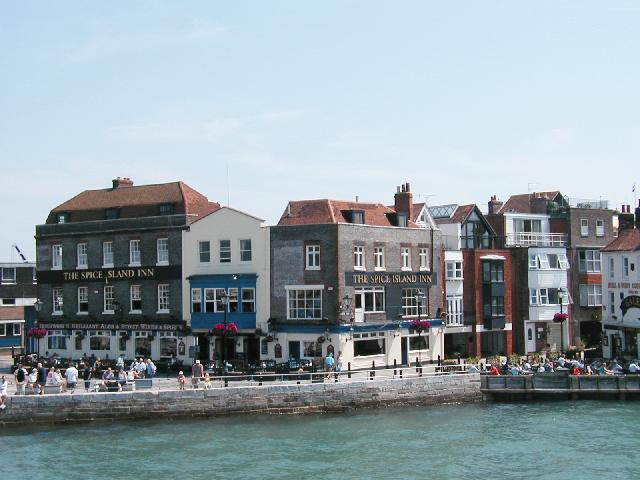
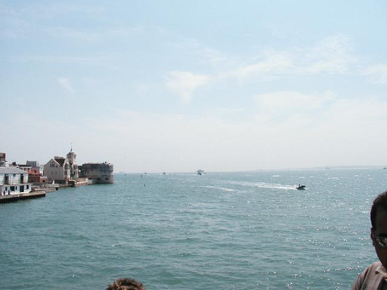

Portsmouth waterfront
Did the fish and chips thing here.

The channel, looking East toward the odious French

The Victory
104 guns. The lower gundeck is not a seadeck (ports blocked, just like Unix today). Half the guns are there, along with 12 men per gun, tropical heat, darkness and the livestock. No wonder floggings were de jour; most of the men were pressed. The mast didn't look like wood to me. Found out that the technology to make wooden masts of this size has been lost. They're painted copper.
There were 23 Americans on board at Trafalgar.
They're quite serious about no photography on board. Can't imagine why.